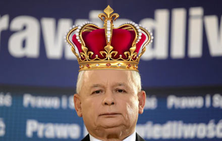
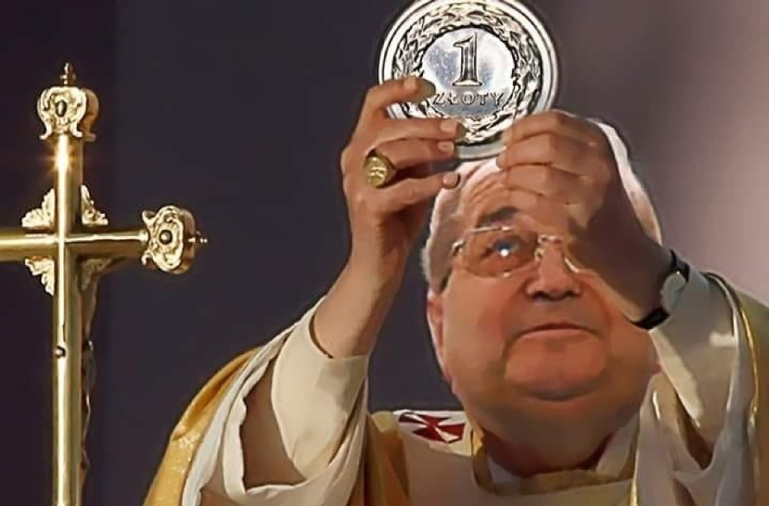

Kaczyński: Ostatni raz będę kandydował na prezesa. Premier komentuje
Jarosław Kaczyński w wywiadzie dla „RP” zapowiedział, że jeszcze jeden, ostatni raz będzie kandydował na funkcję prezesa PiS. Stwierdził, że gdy epidemia minie, w Prawie i Sprawiedliwości będzie kongres i wybory.
„Tym razem jeszcze będę kandydował. Ale na pewno ostatni raz” – powiedział prezes PiS. Mówił też, że w jego partii jest wielu młodych, energicznych ludzi, którzy mogliby go „doskonale zastąpić”.
O te słowa był pytany premier Mateusz Morawiecki w wywiadzie dla „Rzeczpospolitej”. Szefa rządu zapytano, czy myślał o tym, by wystartować na stanowisko lidera.
„Będę gorąco namawiał prezesa, by to nie był ostatni raz, by nadal integrował i wytyczał kierunki działania Zjednoczonej Prawicy. Prezes Jarosław Kaczyński był, jest i pozostanie gwarantem naszej skuteczności i jedności” – powiedział Morawiecki.
„Ale zapowiedział, że jak skończy 75 lat, tak jak biskupi, przejdzie na emeryturę” – zwraca uwagę dziennik. „Mam nadzieję, że tak tylko sobie zażartował” – zakończył premier.
Czytaj dalej

O. Rydzyk przeprasza: Nie chciałem ranić ofiar pedofilii
W związku z reakcjami na wypowiedź o. Tadeusza Rydzyka, wygłoszoną 5 grudnia 2020 r. w czasie uroczystości rocznicowych Radia Maryja w Toruniu duchowny wydał we wtorek oświadczenie przekazane PAP przez rzecznika prowincji warszawskiej redemptorystów o. Mariusza Mazurkiewicza.
„Chcę stanowczo oświadczyć, iż w słowach, które wypowiedziałem 5 grudnia 2020 r. przy okazji obchodów rocznicy założenia Radia Maryja, nie było moją intencją ranienie kogokolwiek, a zwłaszcza osób, które jako małoletnie doświadczyły przestępstw seksualnych ze strony duchownych. Tacy sprawcy, po rzetelnym dochodzeniu i udowodnieniu, winni spotkać się ze stosowną karą” – napisał dyrektor Radia Maryja.
Przyznał, że „grzech seksualnego molestowania małoletnich jest przestępstwem, które winno być traktowane zgodnie ze wskazaniami Kościoła i procedurami prawa cywilnego”. O. Rydzyk zadeklarował, że „kocha Kościół”, dlatego nie miał zamiaru „w żaden sposób rozmywać trawiącego go dramatu grzechu i przestępstwa pedofilii. Mówiąc to, mam na myśli przede wszystkim ofiary tych czynów, będące przecież także dziećmi Kościoła” – napisał zakonnik.
Czytaj dalej